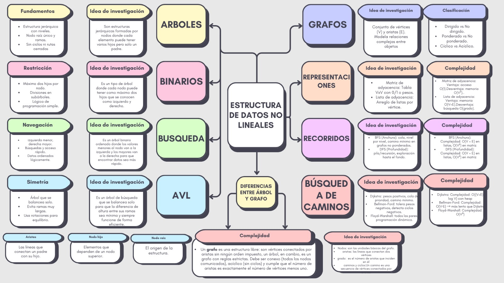

Desarrollo: Mapa Mental de Árboles y Grafos
En esta sesión exploramos las Estructuras de Datos No Lineales. Estas estructuras permiten representar relaciones jerárquicas y redes complejas que no pueden ser modeladas de forma lineal como las pilas o colas.
Árboles y Grafos
Basado en el análisis de la clase, estas son las características principales:
- Árboles: Estructuras jerárquicas (Binarios, AVL, Búsqueda).
- Grafos: Redes de nodos conectados por aristas (Matrices y Listas de adyacencia).
- Algoritmos: Recorridos de búsqueda en profundidad (DFS) y amplitud (BFS).
Mapa Mental Visual

Esquema detallado de estructuras no lineales